dolce far niente
the sweetness of doing nothing
It's the idea that not every moment has to be productive. Sometimes the greatest luxury is slowing down, taking in the view and simply being in the moment.
In Italian, ora means now — the art of being fully present. Yoga, in its oldest sense, means to still the fluctuations of the mind. During the retreat we bring the two together: a few days to take things at a gentler pace, to come back to your breath and to simply be.
Here. Now.
Yoga Retreat — Puglia — tue. 20/11/26 – sat. 24/11/26
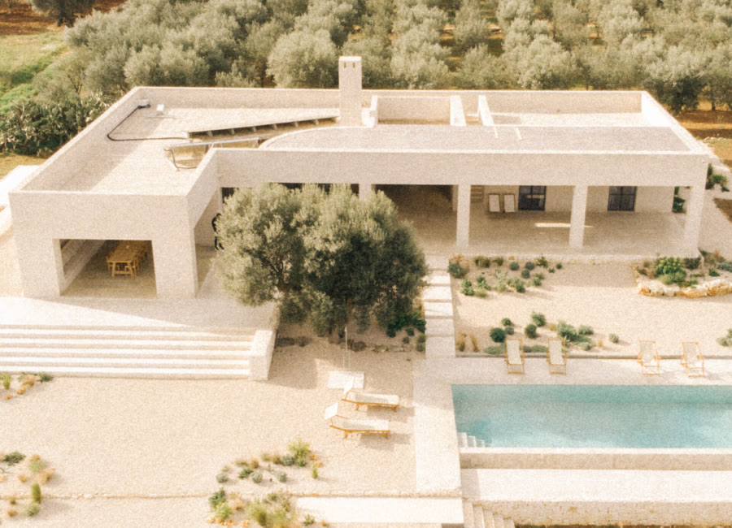
Casa Maiora
A space that breathes both quiet luxury and simple living.
We believe luxury can be quiet. It's found in beautiful spaces that don't ask for your attention but gently hold it. It's found in thoughtful details.
That's why we carefully curate every part of the experience. A beautiful home that feels calm from the moment you arrive. Fresh, nourishing meals prepared with care by a private chef. Small, intimate groups. High-quality practices and materials.
Every element is chosen with intention. Not to impress, but to create an experience that feels effortless and grounding.
Just a few minutes driving from the Adriatic sea and the whitewashed town of Ostuni, you find Casa Maiora. A house designed by Studio Andrew Trotter and built from local stone in the traditional Puglian style. The villa holds four beautifully designed bedrooms: three double rooms with their own private garden and outdoor shower, and one twin room with two single beds overlooking the pool and the Ostuni coastline beyond.
Outside, you'll find shaded terraces, a sun-drenched pool and an open-air kitchen with a wood-fired oven. There are spaces to gather and just as importantly, spaces to retreat; to read beneath an olive tree, to take an afternoon nap or simply to enjoy the silence.
Enjoy a massage in the comfort of Casa Maiora, where experienced hands help release tension and bring your body back into balance. Choose from deep tissue, relaxing or shiatsu massage.
There is no schedule to keep beyond the practices, nowhere you need to be, and no expectation to do anything other than be present.
Practical details
- Private double room: €2800
- Shared double room: €2200
- Twin shared room: €1900
/ Included
- x4 nights accommodation at Casa Maiora
- x3 daily yoga & other movement practices, led by Julie and guest teachers
- morning breathwork, energizing Vinyasa, surprise afternoon practice, and restorative Yin or Slow Flow to end the day
- Water, coffee, tea available all day
- Nourishing, light breakfasts to awaken your body gently and fuel your day
- Mediterranean-inspired cuisine for lunch and dinner, prepared by a private chef using fresh, seasonal ingredients
- Access to the pool, private gardens and outdoor showers
- Moments of connection and quiet reflection, woven throughout the days
- Support with travel planning, including transfer coordination from Brindisi Airport
/ Not Included
- Flights and transport to the retreat location (we'll help coordinate transfers from Brindisi Airport to make your arrival smooth and easy)
- Travel insurance and/or trip cancellation insurance
- Massages or any other activities outside the organised program
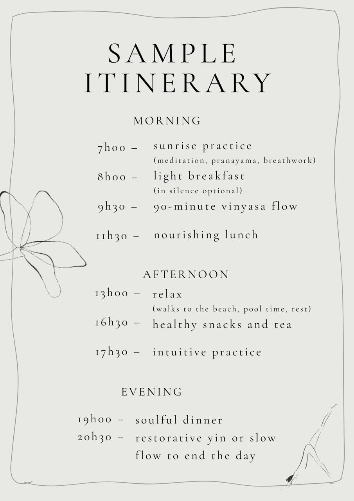
Please note that the retreat begins on Tuesday October 20th at 16h00 and ends on Saturday 24th at 11h00.
See the house


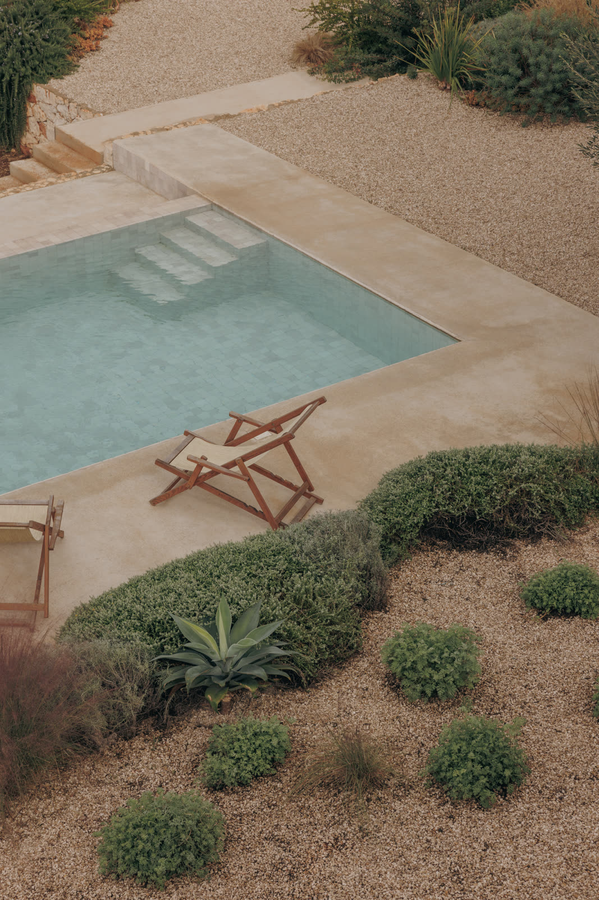
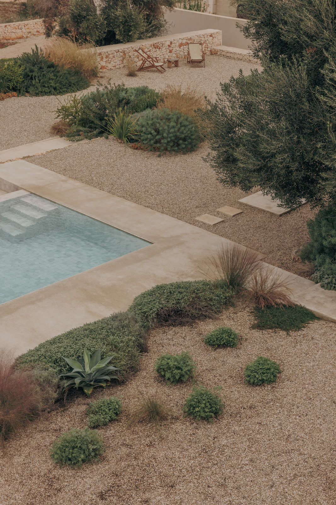
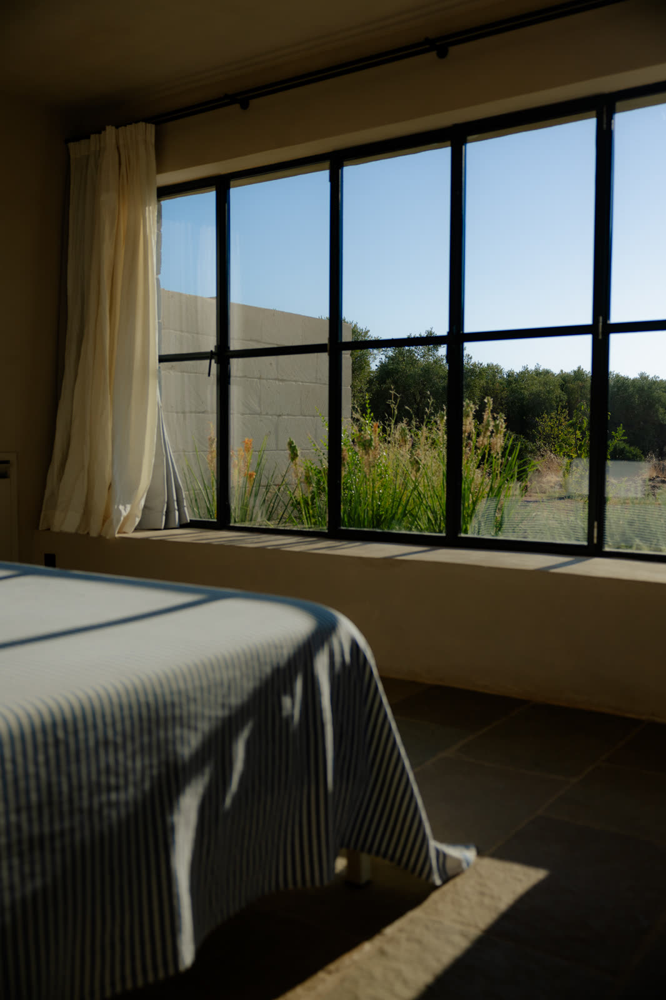
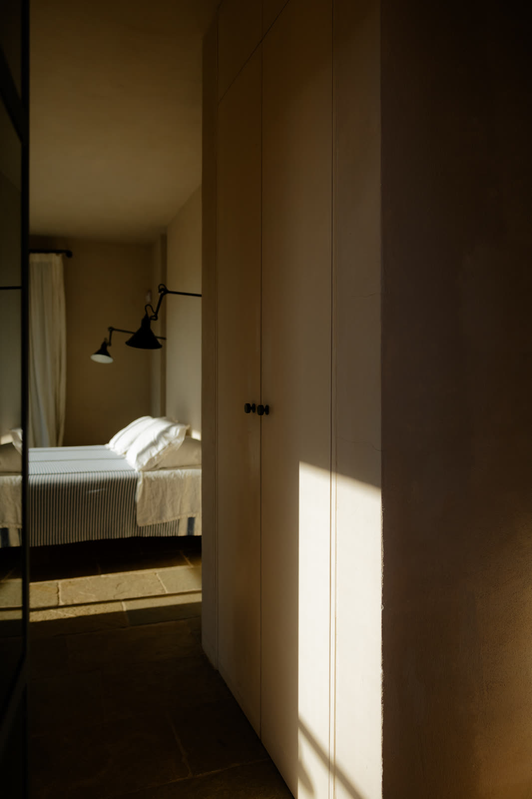
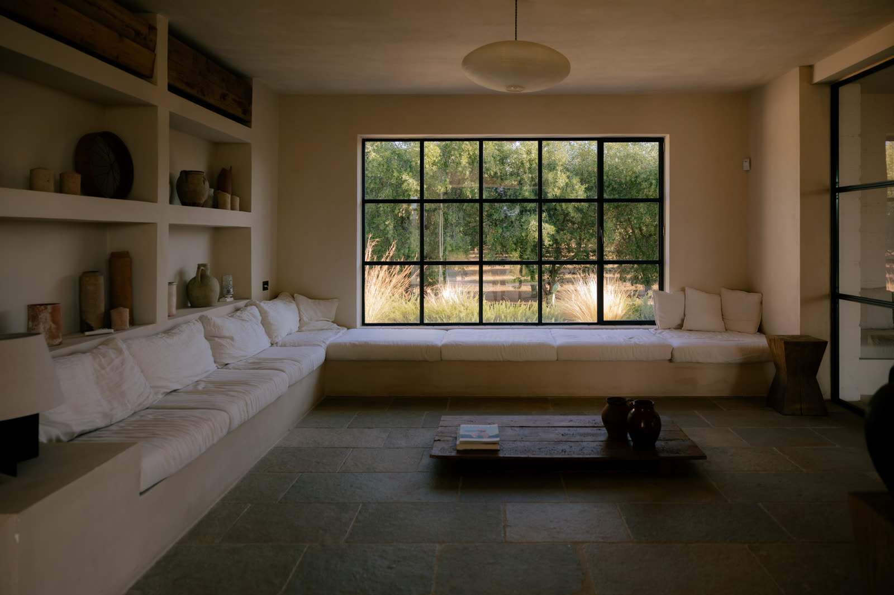
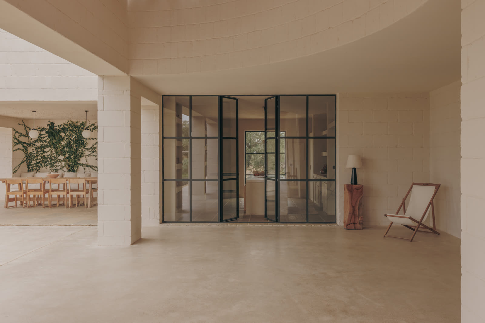
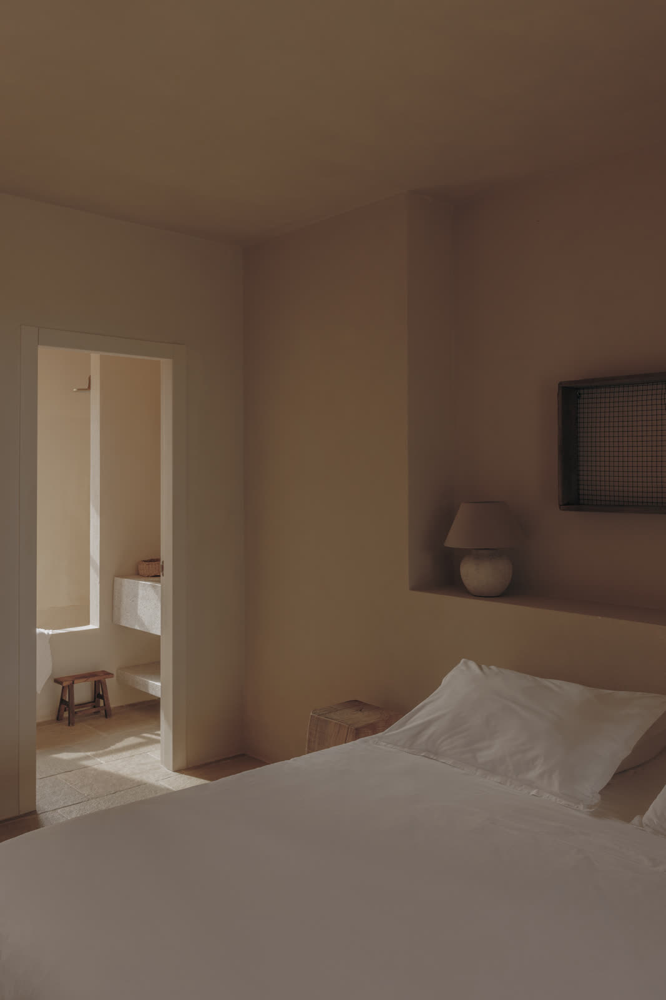
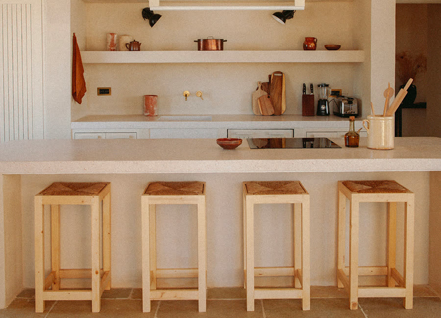
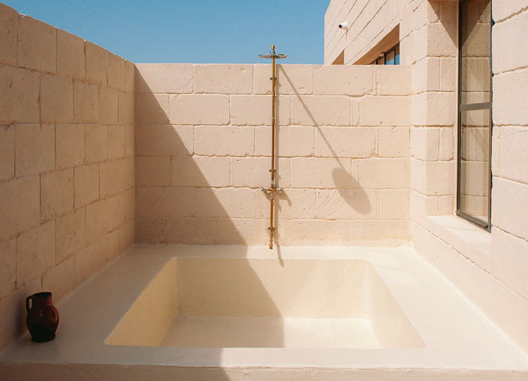
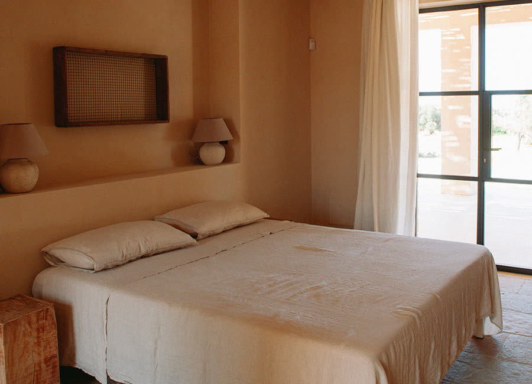
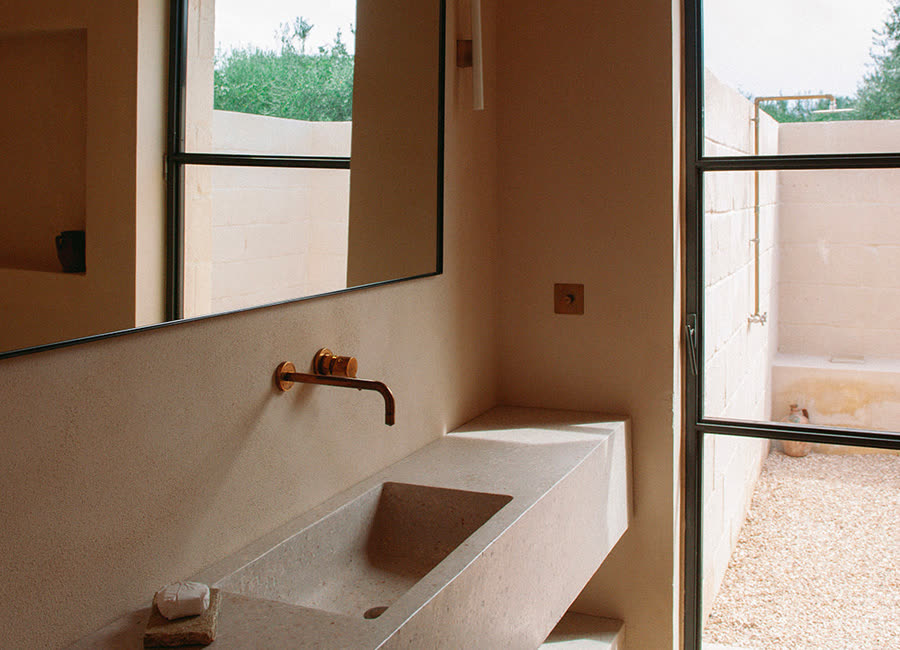